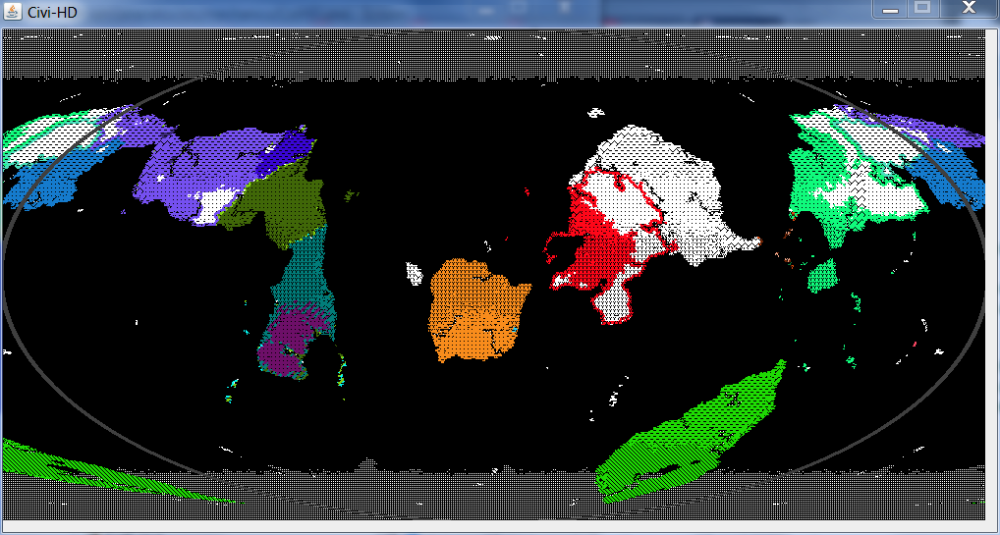

Generates planets, islands, galaxies, and more!
Home | Planet Gen | Island Gen | Civi HD | Civi in Space | Maps
While a good terrain generator chan give you a beautiful untouched world full of mountains, valleys, deserts, and forests, something is generally missing: human interference. Enter Civi-HD: the long-awaited sequel to the popular Civi (one of my other repositories). Not only will it generate quick and moderately-realistic terrain, but it will also continuously simulate empires that will rise, spread, war, advance, revolt, and ultimately collapse. Left-click on any tile to see the name of it's owner, and right-click to throw meteors.
Download it here!
Once all mountains and such are present, rivers must be formed. The program picks a random ocean or river tile that is adjacent to some land. It looks at all adjacent land tiles and picks the one with the highest elevation. That tile then becomes a river flowing into the other tile. It repeats until all land has rivers on it, and then each land tile is given a water value based on how many other tiles are upriver from it (how big the watershed is). This creates a variety of rivers that merge and flow from inland to the coast.
Finally, biomes are selected. Each tile is given a rainfall value, greatest near the equator and near oceans, and a temperature value, which increases gradually toward the equator and decreases with altitude. Both are given a small random element and used to pick a biome: either tundra, plains, desert, or jungle. These biomes will affect the march of civilization.
Now that the terrain is complete, the program starts spawning civis, little empires on the newly formed world. A civi has four main statistics: science, how quickly it advances through the eras, growth-rate, how quickly it claims new tiles, warmongeriness, the probability for it to declare war on a neighbor, and military-might, how well it does when at war. These statistics are randomly selected when the civi founds its capital city.
Science is simple: a civi advances through the eras, and each new era brings new bonuses. Each age grants a boost to military-might, as well as some special ability. Entering the iron-age will allow civis to cross ocean, the industrial age allows urbanization and the dropping of nukes, the space age allows cities to grow to massive sizes and people to settle in the ocean, the utopia age allows the building of utopias, and the apocalypse age triggers the death of civilization.
Growth is also fairly straightforward; a civilization may claim tiles adjacent to its borders at a rate defined by the growth-rate and the biome (civis get a growth bonus in the biome that their capital city is in). Once these tiles have been claimed, they can be developed, which helps to defend them from invasions and rebellions. First, there is settlement, shown by a shading-in of the developed area. Next is cities, which tend to attract nukes and are shown by a darker shade, and utopias, which are immune to meteors and have a lighter shade to them.
War is a method through which civis exchange territory. If one civi borders another, it may choose to invade, which marks some number of tiles dependent on the military-might of the aggressor as disputed. Disputed territory spreads based on how strong the invader's military is, and resolves based on how weak the occupier's military is. Thus, wars between weak and unadvanced civis tend to end quickly, whereas wars between scientifically-advanced superpowers can often overtake both countries. During war, a civi with sufficient science may drop nukes on their opponent, which destroys development and prevents tiles from being redeveloped until the radiation has been cleared. If a civi loses control over its capital city, the city where it originated, then all of its territory is given to the civi who took the capital.
The last important mechanic in Civi-HD is the death-timer. Each civi is born with a prescribed amount of time on the timer. Time is used up more quickly by spreading, waging war, and reaching the apocolypse age. Once the death-timer reaches zero, it continues going into the negative, and the civi begins losing its claim on tiles in its territory. As the timer reaches more negative values, this process accelerates, forcing the civi to shrink until it looses control over its capital city and, inevitably, collapses.